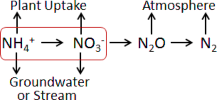
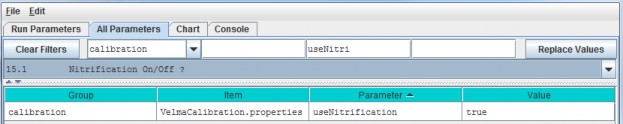
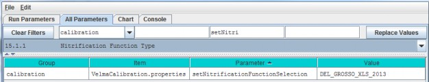
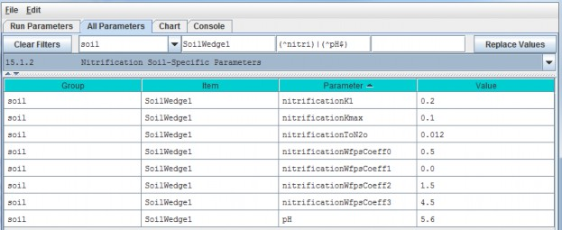

Nitrification
Nitrification is the microbially-mediated conversion of ammonium (NH4+) to nitrate(NO3-). As the diagram below indicates, nitrification (red box) is an important step in the soilnitrogen cycle (partially shown here).

Compared to the positively charged NH4+ ion, the negatively charged NO3- ion ishighly mobile in soil (also negatively charged) and more readily leached to groundwater and streams.
Nitrification also affects rates of nitrogen uptake by plant species that differ in their affinities forNH4+ and NO3- (McKane et al. 2002). Nitrification is also a preliminary stepfor the process of denitrification, in which NO3- is microbially transformed to nitrous oxide(N2O), a potent greenhouse gas, and nitrogen gas.
The default (recommended) version of the nitrification subroutine in VELMA v2.0 is based on Parton et al. 2001, with recent modifications made by Dr. Stephen Del Grosso (steve.delgrosso@ars.usda.gov) and coworkers. Dr. Del Grosso's modifications are described in his NGAS spreadsheet model.
15.1 - Nitrification On/Off
Select "15.1 Nitrification On/Off ?" from the All Parameters drop-down menu to specify whether to turn theNitrification subroutine on (true) or off (false).

Parameter Definitions
| Parameter Name | Parameter Description |
|---|---|
| useNitrogenFixation | When set false daily nitrification amounts are ignored and the PSM model behaves as if the nitrification amount is zero When set true (default) nitrification occursnormally |
15.1.1 - Nitrification Function Type
Select "15.1.1 Nitrification Function Type" from the All Parameters drop-down menu to specify the

Parameter Definitions
| Parameter Name | Parameter Description |
|---|---|
| setNitrogenFunctionSelection | Specify "PARTON_1996" "PARTON_2001" or "DEL_GROSSO_XLS_2013" as the value of the setNitrificationFunctionSelection property. Warning: be sure to use UPPERCASE text! The simulator engine will compute nitrifcation amounts using the specified function.PARTON_1996 = Function based upon equation given in Figure 2 (d) in [Parton et al. 1996] from Global BiochemicalCycles v.10. PARTON_2001 = Function based upon equation (2) in [Parton et al. 2001] from Journal of GeophysicalResearch v.106. DEL_GROSSO_XLS_2013 = (Default / RECOMMENDED) function implementing the Excel 2013 spreadsheet model provided byDr. Stephen Del Grosso. |
15.1.2 - Nitrification Soil-Specific Parameters
Select "15.1.2 Nitrification Function Type" from the All Parameters drop-down menu to specify nitrificationsubroutine parameters. The parameters shown below must be specified for each soil type in your watershed (justone soil type shown in the screenshot below).

Parameter Definitions
| Parameter Name | Parameter Description |
|---|---|
| nitrificationK1 | Fraction of net Nitrogen mineralized that is nitrified per day range in [0.0 1.0]. [Parton et al.2001]. |
| nitrificationKmax | Maximum fraction of NH4 nitrified per day in units of gN/m2/day range in [0.0 1.0]. [Parton etal. 2001] |
| nitrificationToN2o | N2O flux associated with nitrification in units of gN/m2/day |
| nitrificationWfpsCoeff0 | Soil-specific coefficient for Water Filled Pore Space (WFPS) effect on nitrification equation. |
| nitrificationWfpsCoeff1 | Soil-specific coefficient for Water Filled Pore Space (WFPS) effect on nitrification equation. |
| nitrificationWfpsCoeff2 | Soil-specific coefficient for Water Filled Pore Space (WFPS) effect on nitrification equation. |
| nitrificationWfpsCoeff3 | Soil-specific coefficient for Water Filled Pore Space (WFPS) effect on nitrification equation. |
| pH | This soil's pH value. |
Calibration Notes
The nitrification model has been extensively applied to agricultural systems by the NGAS model developers (Partonet al. 2001; Del Grosso et al. 2001 and 2006). We recommend starting with the default parameter values providedby Stephen Del Grosso in his NGAS spreadsheet model.
Default Parameter Values:
nitrificationK1 = 0.20 (Parton et al. 2001; Del Grosso NGAS spreadsheet model)
nitrificationKmax = 0.1 (Parton etal. 2001; Del Grosso NGAS spreadsheet model)
nitrificationToN2o = 0.02 (Parton et al. 2001; Del Grosso NGASspreadsheet model = 0.012)
Soil Texture Table
| Nitrification Parameter | Coarse | Fine | Volcanic ash |
|---|---|---|---|
| nitrificationWfpsCoeff0 | 0.5 | 0.65 | 0.75 |
| nitrificationWfpsCoeff1 | 0 | 0 | 0 |
| nitrificationWfpsCoeff2 | 1.5 | 1.2 | 1.2 |
| nitrificationWfpsCoeff3 | 4.5 | 2.5 | 2.5 |
References for Sections 15.0 - 15.1.2
Del Grosso, S. J., Parton, W. J., Mosier, A. R., Ojima, D. S., Kulmala, A. E., & Phongpan, S. (2000). Generalmodel for N2O and N2 gas emissions from soils due to dentrification. Global Biogeochemical Cycles, 14(4),1045-1060.
Del Grosso, S. J., Parton, W. J., Mosier, A. R., Walsh, M. K., Ojima, D. S., & Thornton, P. E. (2006).DAYCENT national-scale simulations of nitrous oxide emissions from cropped soils in the United States. Journalof environmental quality, 35(4), 1451-1460.
McKane, R. B., Johnson, L. C., Shaver, G. R., Nadelhoffer, K. J., Rastetter, E. B., Fry, B., ... & Murray, G.(2002). Resource-based niches provide a basis for plant species diversity and dominance in arctic tundra.Nature, 415(6867), 68-71.
Parton, W. J., Holland, E. A., Del Grosso, S. J., Hartman, M. D., Martin, R. E., Mosier, A. R., ... &Schimel, D. S. (2001). Generalized model for NO x and N2O emissions from soils. Journal of Geophysical Research:Atmospheres (1984-2012), 106(D15), 17403-17419.